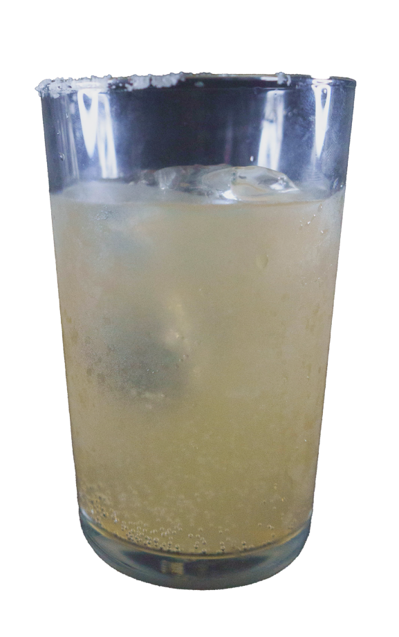

カクテル言葉
考えの正しさを主張できる
心やさしい人
パロマ
カクテル言葉
考えの正しさを主張できる
心やさしい人
材料
| テキーラ | 45ml |
| グレープフルーツジュース | 45ml |
| トニックウォーター | 適量 |
| 塩 | 適量 |
作り方
グラスのふちにグレープフルーツの果汁をつけて塩をつけます
氷を入れたグラスにテキーラとグレープフルーツジュースを入れます
バースプーンを潮に当たらないようにステアします
氷に当てないようにトニックウォーターを注ぎます
氷を下から持ち上げて軽く上下に混ぜる
感想
テキーラは柑橘系と相性がいいためグレープフルーツともよく合い、
トニックウォーターの独特な苦味、爽快感がさっぱりと飲みやすい仕上がりになりました。